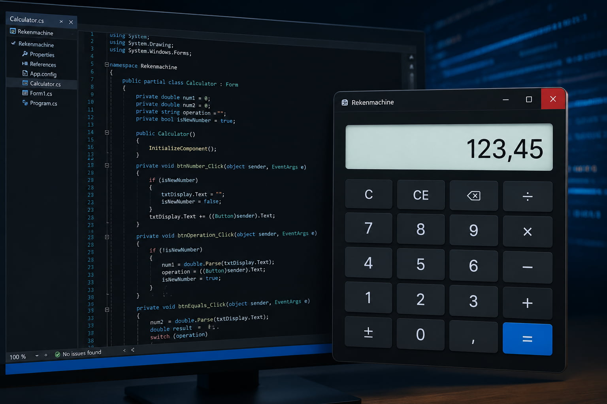
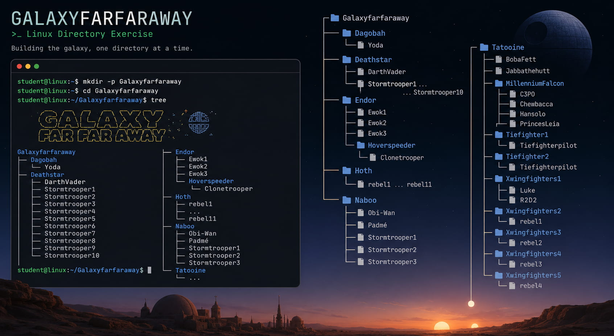

Welkom op mijn portfolio
Hallo! Ik ben Berkant Yigit, student Systeem- en Netwerkbeheer aan AP Hogeschool. Op deze website vind je een overzicht van mijn projecten, vaardigheden en ervaringen die ik heb opgedaan tijdens mijn opleiding. Kijk gerust rond en ontdek wat ik allemaal gemaakt heb!
Over mij
Ik ben Berkant Yigit, een gepassioneerde student Systeem- en Netwerkbeheer aan AP Hogeschool. Wat mij het meest aanspreekt in mijn opleiding is het beveiligen van online systemen, ik vind het fascinerend hoe je digitale omgevingen kan beschermen tegen bedreigingen. Na mijn opleiding wil ik graag aan de slag in de IT-sector, waar ik mijn kennis en vaardigheden verder kan ontwikkelen. Buiten school hou ik van gamen en sporten om mijn hoofd leeg te maken.
Vaardigheden
Linux
C#
Python
HTML & CSS
Bootstrap
JavaScript
Netwerken
Solderen / Hardware
Projecten

Rekenmachine
C# console-applicatie met optellen, aftrekken, vermenigvuldigen en delen.
* Afbeelding gegenereerd met AI
Lees meer
GalaxyFarFarAway
Linux oefening waarbij een volledige mappenstructuur werd aangemaakt via de terminal.
* Afbeelding gegenereerd met AI
Lees meer
Network Mapper Lite
Een app die je netwerk scant en alle verbonden apparaten overzichtelijk weergeeft.
* Afbeelding gegenereerd met AI
Lees meer